O Odo registra seus turnos de entrega e de corridas, os quilômetros que você roda a trabalho e suas despesas profissionais. Na hora do imposto, ele entrega tudo o que seu contador ou o myTax precisa. Configurar leva cerca de 5 minutos.
Faça isso uma vez só. Depois, o Odo abre com um toque, em tela cheia, e funciona sem sinal.
iPhone (Safari)
Toque no botão Compartilhar na parte de baixo da tela (um quadrado com uma seta para cima).
Role para baixo e toque em Adicionar à Tela de Início.
Toque em Adicionar no canto superior direito.
A partir de agora, abra o Odo pelo novo ícone Od na tela inicial.
Android (Chrome)
Toque no menu ⋮ (três pontos, canto superior direito).
Toque em Instalar app ou Adicionar à tela inicial.
Toque em Instalar ou Adicionar.
Abra o Odo pelo novo ícone na tela inicial.
Android (Samsung Internet)
Toque no menu ≡ (três linhas, canto inferior direito).
Toque em Adicionar página a e depois em Tela inicial.
Toque em Adicionar.
Vê um pequeno ícone de instalar na barra de endereço? Tocar nele faz a mesma coisa.
💡 Não achou o botão? Salve o Odo como favorito. iPhone: Compartilhar → Adicionar Favorito. Chrome: ⋮ → toque na estrela. Samsung Internet: ≡ → Adicionar página a → Favoritos.
3
Crie uma conta grátis
Sem conta, seus registros ficam só neste celular. Com uma conta, o Odo faz backup de tudo, e você pode entrar num celular novo e recuperar tudo.
Toque no ícone de pessoa no canto superior direito.
Toque em Nova conta.
Digite seu e-mail e crie uma senha (pelo menos 6 caracteres).
Toque em Criar conta. Se o Odo pedir, abra o e-mail do Odo e toque no link para confirmar, depois entre.
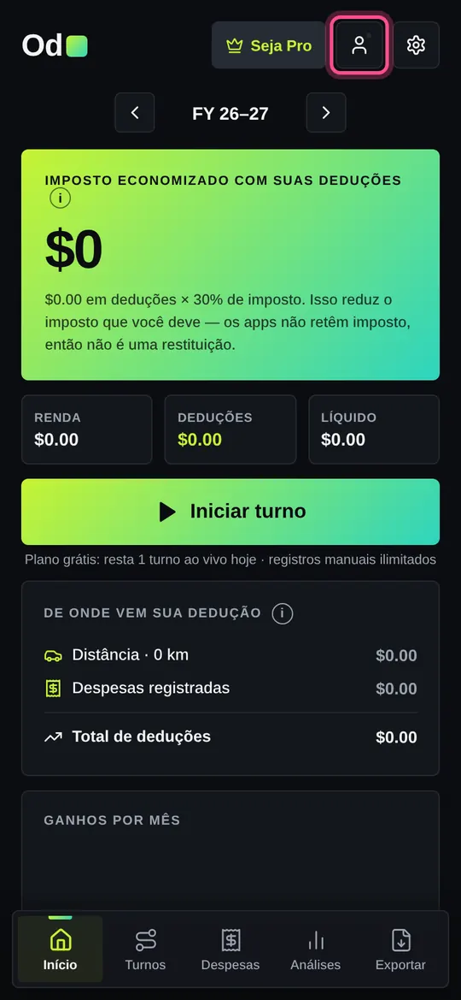
1. Toque no ícone de pessoa
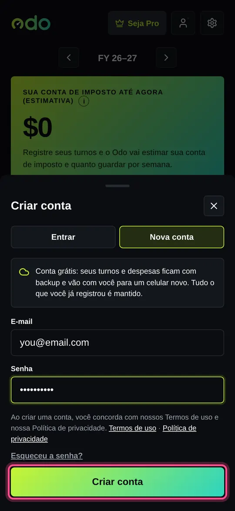
2. Nova conta → Criar conta
💡 Celular novo? Abra o link, toque no ícone de pessoa, escolha Entrar e use o mesmo e-mail e senha. Seus registros voltam. Um ponto verde no ícone de pessoa quer dizer que o backup está feito.
4
Conte ao Odo sobre você (1 minuto)
Toque no ícone de engrenagem no canto superior direito para abrir as Configurações.
Seus veículos: escolha Carro, Moto ou Bike.
Região: deixe em Austrália.
Renda total prevista para este ano: um palpite de tudo o que você vai ganhar, incluindo outro emprego. O Odo usa isso para calcular sua alíquota.
Toque em Salvar configurações lá embaixo.
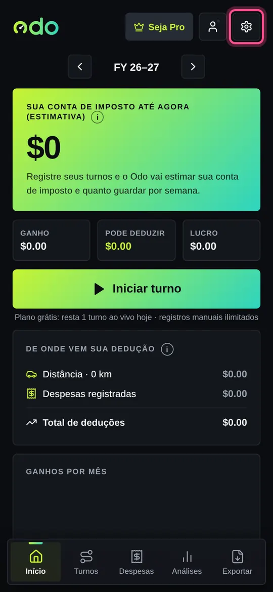
1. Toque na engrenagem
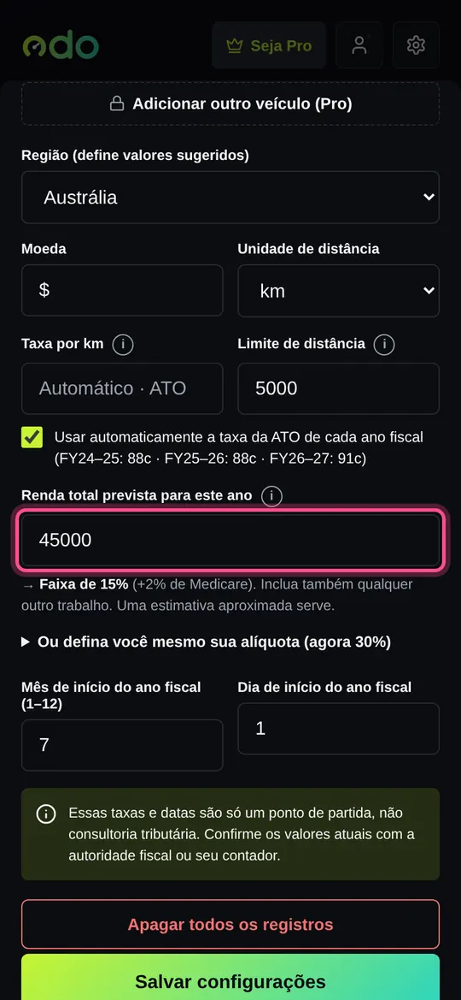
2. Informe sua renda prevista
💡 Anda de bike ou moto? O Odo muda para o Modo entregador. A taxa por km é só para carros, então sua dedução vem das suas despesas: celular, reparos, baterias, bags e equipamentos.
5
Registre todo turno
Seus quilômetros costumam ser sua maior dedução. São só dois toques por turno.
Ao começar: toque em Iniciar turno, escolha o app (Uber, DoorDash…), digite o número do hodômetro e toque em Começar. Pode fechar o Odo; o cronômetro continua.
Ao terminar: toque em Encerrar turno, digite o novo número do hodômetro e quanto você ganhou, depois toque em Salvar turno.
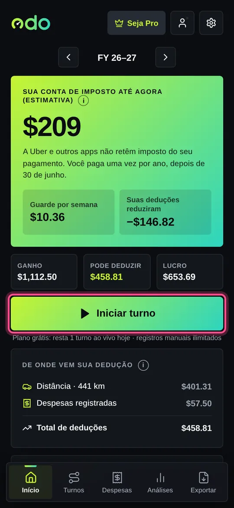
1. Toque em Iniciar turno
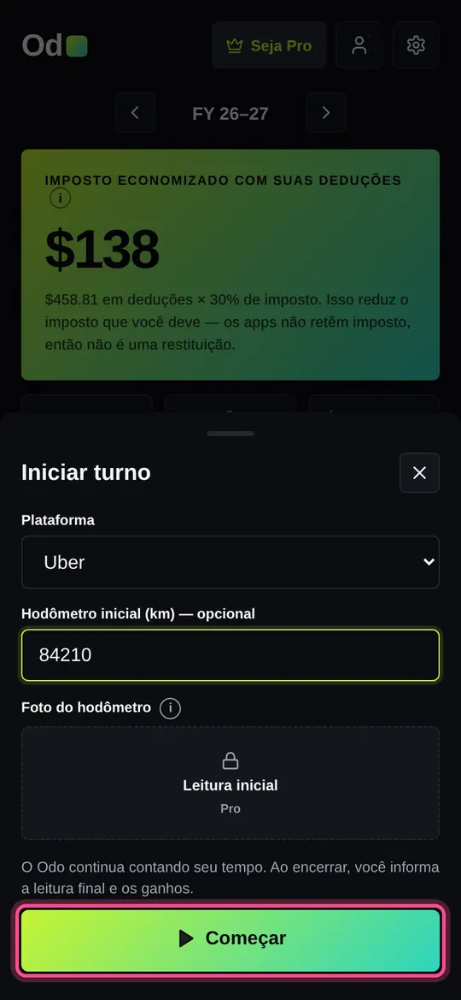
2. Hodômetro → Começar
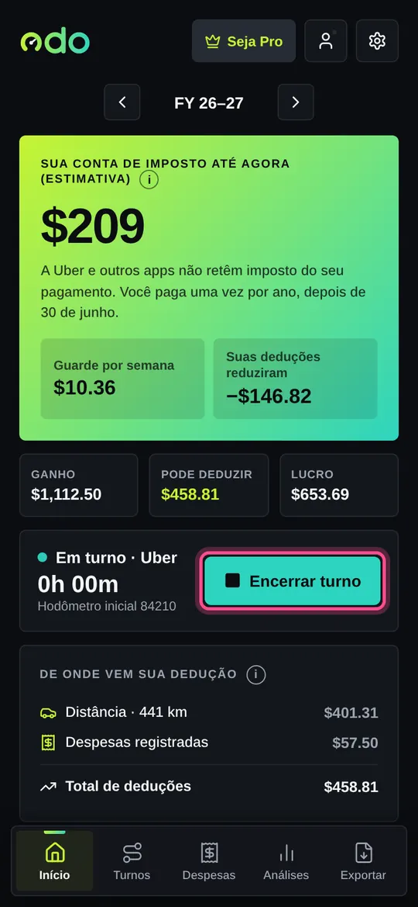
3. Depois: Encerrar turno
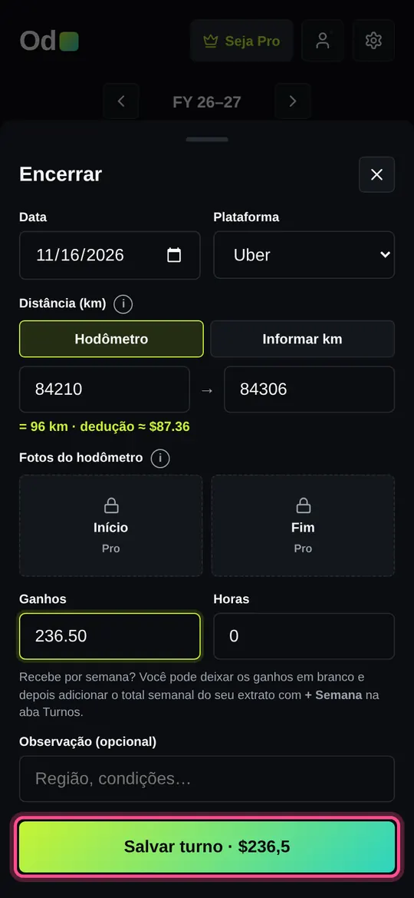
4. Hodômetro final + ganhos → Salvar
PROFotografe seu hodômetro
Com o Odo Pro, toque em Leitura inicial ao começar um turno para fotografar o hodômetro, e adicione uma foto de Fim ao terminar. Cada foto fica salva com o turno, com data e hora, e com backup na sua conta.
Por que isso importa: a ATO pode pedir que você mostre como calculou seus quilômetros de trabalho, e você precisa guardar seus registros por 5 anos depois da declaração. Uma foto no início e no fim de cada turno é uma prova forte e difícil de contestar. Você também nunca perde nem digita errado uma leitura, mesmo trocando de celular. Na hora do imposto, Exportar → Baixar fotos entrega todas as fotos ao seu contador em um único ZIP.
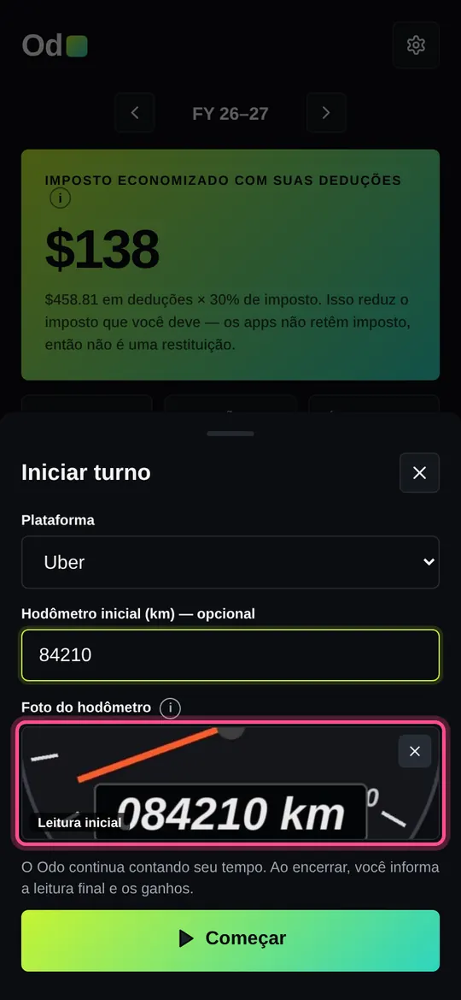
A foto do hodômetro, salva com o turno
💡 Esqueceu de iniciar? Aba Turnos → + Turno e registre depois. Recebe por semana? Aba Turnos → + Semana e copie o total do extrato semanal. Só contam os km de trabalho: a ida de casa até a primeira entrega pode não contar.
6
Adicione suas despesas de trabalho
Vá até a aba Despesas e toque em Adicionar despesa.
Escolha uma categoria (por exemplo Celular e internet) e digite o valor.
Ajuste o Uso profissional para quanto é de trabalho. Usa o celular 70% para entregas? Coloque 70%.
Toque em Salvar.
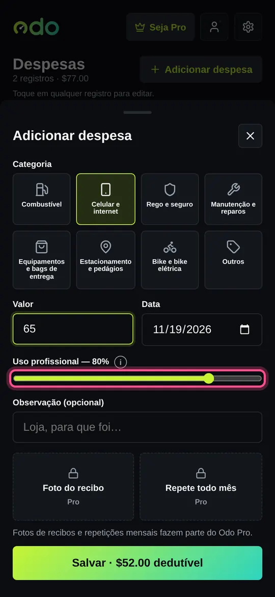
Defina quanto é de trabalho
⚠️ Dirige carro? Não adicione combustível, rego, seguro nem manutenção. A taxa por km da ATO (91c por km em 2026–27) já cobre esses custos. Estacionamento e pedágios podem ser adicionados.
7
Confira seus números
Sua conta de imposto até agora
Uma estimativa aproximada do imposto que você vai dever. Os apps não retêm imposto do seu pagamento, então você paga uma vez por ano, depois de 30 de junho. Cada km e despesa de trabalho que você registra deixa ela menor.
Guarde por semana
Separe isso toda semana para a conta do imposto em julho não assustar.
Ganho / Pode deduzir / Lucro
Quanto você ganhou, os km e despesas de trabalho que pode deduzir, e o que sobra: seu lucro.
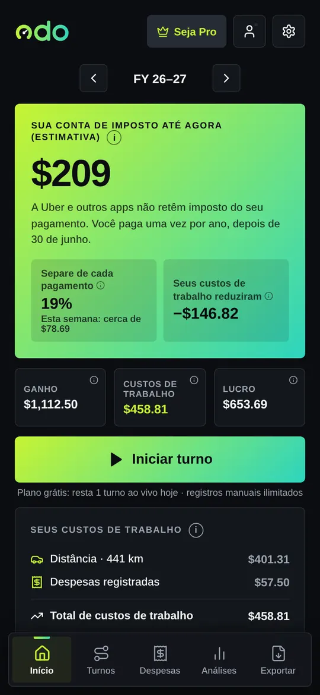
Seu ano num relance
💡 Toque em qualquer ícone ⓘ para uma explicação rápida.
8
Na hora do imposto: exporte
Depois de 30 de junho, abra a aba Exportar.
Baixe seus turnos, despesas e o resumo. Eles abrem no Excel ou no Google Sheets.
Envie ao seu contador ou use os totais no myTax.
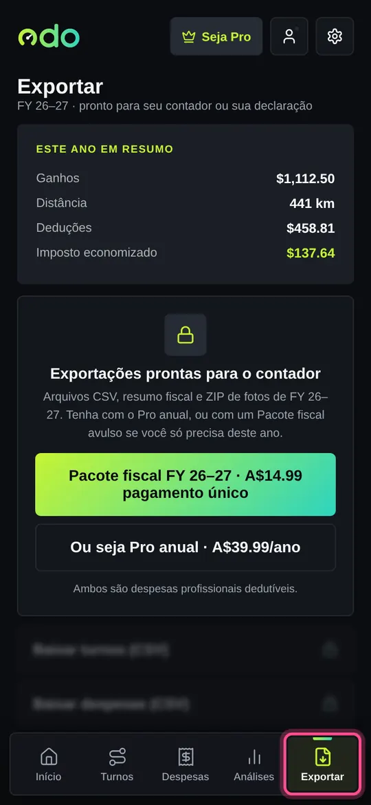
Tudo o que seu contador precisa
💡 As exportações vêm com o Pro anual, ou compre um Pacote fiscal avulso (A$14.99) para um só ano. Os dois são despesas de trabalho dedutíveis.
Sobre o Odo
Oi, eu sou o Rickie 👋 Trabalho com folha de pagamento na Austrália, então salários e impostos fazem parte do meu dia a dia.
Muitos amigos meus dirigem para a Uber e outros apps. Na hora do imposto, a maioria não tinha nenhum registro das despesas, nem dos quilômetros que podia deduzir para pagar menos imposto. É uma pena, porque é o dinheiro suado deles, e cada dólar conta.
Por isso criei o Odo: um jeito simples de registrar cada turno, cada quilômetro e cada despesa de trabalho, para que tudo esteja pronto na hora do imposto.
Independente. O Odo não tem ligação com a Uber, DoorDash, Menulog ou a ATO.
Precisa de ajuda?
Guia completo: Configurações → Como usar o Odo, ou o guia online.
Dúvidas? Configurações → Ajuda e suporte. Se você estiver conectado, respondemos ali mesmo no app.
O Odo é uma ferramenta de registro, não consultoria tributária. Confirme as regras atuais em ato.gov.au ou com um agente fiscal registrado. · Atualizado em 17 de novembro de 2026